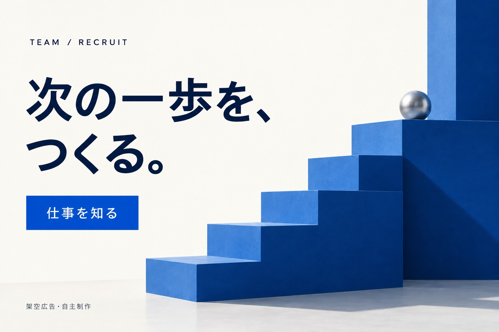

3つの扉と、1秒間のランダムな驚き。
制作解説 ↗

かたちと、透明感。幾何学のリズムと、ガラスの透明感。少し遊び心のあるデザインへ。
01 / SELECTED WORKS
Webサイトからビジュアルまで。
構成・導線・世界観を一つにつなげた制作例です。
3つの扉と、1秒間のランダムな驚き。
制作解説 ↗課題から導入まで、迷わず読める情報設計。

求人・カフェ・イベント。用途ごとの視線設計。
無機質な素材に、やわらかな動きと光を。
掲載作品は自主制作です。架空サービス・広告を含み、実案件の受注実績や運用成果を示すものではありません。文章・コード・画像の制作に生成AIを活用しています。
02 / APPROACH
何を伝え、どこへ案内するのか。
小さく形にして、確認し、整える。
制作の一つひとつを、目的につなげて考えます。
伝える順番、見出し、導線を整理。読む人が必要な情報にたどり着ける構成を目指します。
余白、文字、配色に役割を持たせ、スマートフォンでも読みやすい画面へ仕上げます。
実際に表示して、リンクや操作を確認。生成AIも活用しながら、表現と使いやすさを調整します。
03 / LET’S MAKE IT CLEAR
Webページ・LP・バナーのご相談は、
このポートフォリオをご覧になったランサーズのプロフィールからお送りください。
目的・必要なページや画像・希望納期を添えていただくと、内容を整理しやすくなります。